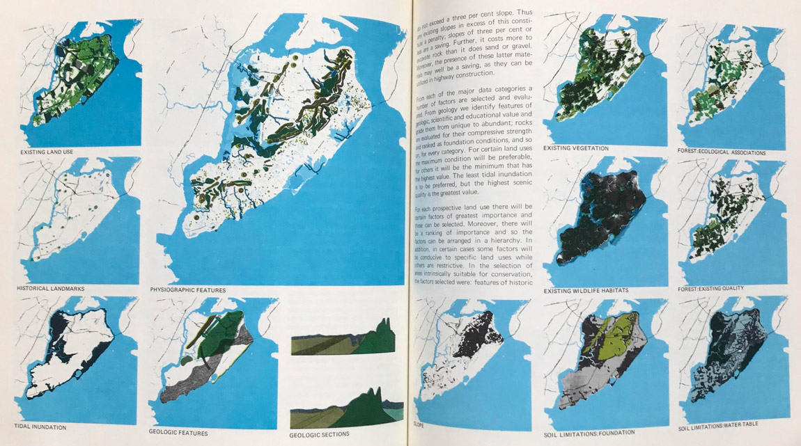

Drawing the monsoon into
cosmopolitical conversations
Drawing is not representional but constitutional for Monsoon Assemblages. It is a way of working out a new paradigm and a new imaginary for spatial practice. Our drawings bring the monsoon to life as a zone of admixture of earth sea and sky and as a volatile, volumetric, life-sustaining weather world. In the process of making them, archival maps, scientific data, software, photography, video, sketches and painting were used as cognitive tools to construct drawings as affective, rhetorical devices that describe earthly vulnerabilities at a time of climate change and the Anthropocene.
Top: Axonometric view of rainfall over
Bangladesh, 1998.
Bottom: Rain in Gulshan, Dhaka, October 2019.
Thinking with the monsoon
Above: Detail of the plan below showing soil moisture content, rainfall and convective potential energy (the amount of energy that the surface can exert on the volume of air above it), indicated respectively in the graded circles, crosses and pink dashed arcs.
“The most powerful stories throughout history have been the ones told with pictures … we stand little chance of telling a new story if we stick to the old illustrations”.1
One of the key questions that has guided Monsoon Assemblages has been how to conceive and grasp the monsoon through drawing. Unfurling the monsoon visually as a story of interdependent and interpenetrating natures has been one of the most challenging and rewarding aspects of the project. Our drawings were conceptualised as ways of thinking with the monsoon as an entanglement of intra-acting meteorological, hydrological, geological, biological and socio-political forces, rather than thinking about it as a scientific object, an onset date, an economic indicator or a disaster-in-the-making.


Twelve months of rainfall across
northern India and Bangladesh, 1998.
The drawings convey the path of the
monsoon across the territory and the
intermingling of sky and earth in the
wetness of rain.
Top: Section.
Bottom: Plan.
Departures
Above: Detail of section through the atmosphere above India using Calypso lidar data showing back scatter from aerosols and clouds.
“Humans are latecomers to the world of meteorological flux”.2
This meant departing from the well settled analytical conventions of architectural drawing, namely orthographic projection and perspective that were not up to the task of depicting the voluminous, dynamic materiality of the monsoon. Neither were the cartographic techniques used by landscape architects since the 1960s that analyze landscapes by drawing them as separate layers of data. Constituting the monsoon through drawing required liberating drawing from the topographic surface in order to depict its planetary scope alongside local inflections, intensities, volumes, cycles and rhythms.

Top: Perspective drawing. Albrecht Durer, Der
Zeichner des liegenden Weibes, 1512-1525.
Public Domain via Wikimedia Commons.
Middle: Analysis of a landscape into separate
layers of data. Extract from Ian L. McHarg,
Design with Nature, New York, Doubleday, 1971,
pp. 106, 107.
Below: Mist swirling around the summit of
Mount Popa, a Holocene epoch volcano in
Myanmar.
Above: A cross section through the atmosphere over the Indian subcontinent on November 23, 2017 extending from the surface of the earth to 30 kms in height. The drawing is generated from Calypso lidar data measuring back-scatter from aerosols and clouds.

Above: A cross section through the Earth’s atmosphere and crust from the Indian Ocean to the Arctic. The satellite path along which the atmosphere data was generated on November 23, 2017 is indicated. The atmosphere is drawn using Calypso lidar data that measures back scatter from aerosols and clouds. The Earth’s crust is shown in layers from upper sediments to middle sediments, upper, middle and lower crusts down to the earth’s mantle. It clearly shows the extraordinary impact of the Himalayan orogeny on the Earth’s subterranean life.


Left: A speculative drawing of the Earth’s crust
from below.
Right: A speculative model of the Earth’s crust
and three atmospheric cuts.
Maritime and synoptic charts
Above: Detail of drawing of the winter monsoon showing isobar contours, wind speed and direction, aerosols, clouds, surface temperature and areas of precipitation.
“Variation [of winds] is better expressed in the Mapp [sic] … than can be in words”.3
And so, to start, we turned to the traditions of monsoonal cartography. The fact that the monsoon became a map was a distinctive feature of the modern age. Early monsoonal cartography, in keeping with the trading ambitions of European mercantile companies, took the form of maritime charts constructed on the basis of weather observations recorded in ships logs. When British involvement in India transitioned from a mercantile enterprise to revenue extraction, the objective of meteorology became the study and prediction of climate and synoptic charts displaced maritime charts as the dominant cartographic conventions. It is this tradition that our maps speak to.
Above: Monsoon & trade wind chart of the
Indian Ocean. Source: Maury, M.F., et al. (1859) Monsoon & trade wind chart of the Indian Ocean.
Washington, D.C.: United States Hydrographical
Office. Source: Library of Congress.
Right top: Southern Asia and Indian Ocean
showing isobars and winds for January. Source:
Eliot, J., Climatological Atlas of India, plate 7-8.
Source: British Library, Shelfmark: Asia, Pacific &
Africa X 265.
Right bottom: Southern Asia and Indian Ocean
showing isobars and winds for July. Source: Eliot,
J., Climatological Atlas of India, plate 9-10. Source:
Briti sh Library, Shelfmark: Asia, Pacific & Africa X
265.

Left top: East India Man sailing
from Madras, 1797. Source: Madras
Tercentenary Commemoration
Committee, Madras Tercentenary
Commemoration Volume, New Delhi,
Asian Educational Services, 1994, p. 212.
Source: British Library, Shelfmark: Asia,
Pacific & Africa V 1375.
Left bottom: Historic monument to
the first meteorological observatory
established by the East India Company in
1792; Chennai Regional Meteorological
Centre, Nungambakkam.
Above: Paired drawings of the winter and summer monsoons over the Indian subcontinent. The upper drawing of the winter monsoon is drawn from the surface of the earth upwards using aerial data. The lower hand drawing of the summer monsoon is drawn looking downwards, using land and ocean data.
Above: The same paired drawings of the
winter and summer monsoons showing the
complex array of observational instruments
that contribute to the production of the
climatic data used in the drawings. They
show areas of data-rich certainty and the
blind spots in the observational machine.
See footnotes for details of the observational
instruments.
Left: northeast winter monsoon.
Right: southwest summer monsoon.
Global land-ocean-atmosphere
intra-actions
Above: Detail of drawing through a section of
the troposphere, cut through the Himalayas
and Indian landmass, showing evolving
temperature gradients and the alternating
wind speed directions vertically through 37
isobaric specific levels up to the tropopause.
Belwo right: Tropospheric globe. This
exaggerated study shows the deformed nature
of the tropopause, variably compressed and
inflated throughout the year due to changing
weather patterns and pressure differentials
Data taken at monthly intervals during 2016.
After a series of disastrous monsoon failures at the end of the nineteenth century, meteorologists began to realise that the monsoon must be informed by features occurring not just over India and its adjacent territories and oceans, but in other parts of the global land-ocean-atmosphere system. This introduced altitude into cartography and the scientific imaginary. The flight paths of kites and balloons began to realise the atmosphere as a knowable and traversable space.
Below: Sky gods photographed on Mandalay Hill.
Bottom: Tropospheric sections through the Indian
subcontinental monsoon, June to December, 2016.
These sections are cut through India at 77.5°
longitude and reach up to the tropopause. They show
the changing isobaric levels, temperature gradients,
wind speed and direction during summer and winter
monsoon seasons.
Satellite technology
Above: Detail of drawing of the winter monsoon over the Indian subcontenent showing air based climatic phenomena revealed and intensified through observation by doppler radars and various other meteorological instruments located and annotated within the drawing.
The advent of earth orbiting satellites during the Cold War from the 1950s onwards enabled new and different ways of understanding weather. They allowed meteorologists to literally see large weather systems as they developed without having to construct them meticulously from instrument readings and, with the aid of computers, to model past and future climates. It is this world of global data, parametric modeling and atmospheric politics that our monsoonal cartography draws from and speaks to.

Top: Detail of the first complete view of
the world’s weather collected by TIROS IX,
1965. The image was assembled from 450
photographs to create the first photomosaic
of the world’s cloud cover. Source: NASA.
Left centre: EUMETSAT MPEF MPE, 2018-03-
19, 12.00.
Left bottom: Himawari-8 B13 16 March 2018,
04:20-07:00.
Right top and centre: Photographs of
computer screens taken in the Maldives
Meteorological Centre, Hulhumale in 2015.
Right bottom: Telecommunications mast
and pagoda at the summit of Mount Popa in
Myanmar.

Above: A view of the globe centred on Chennai, illustrating the city’s global connectivity through the international submarine data cable network and India’s complex array of low earth orbiting and geostationary communication satellites.
Constructing drawings from data
Above: Detail of a cloud formation in the perspectival view over Chennai during monsoon rains. Vertical lines locate areas of cloud coverage and their relative precipitable moisture content (length). In the background you can see the confluence of satellite tracks that measure and recorded this data.
Our drawings begin as pixels radioed from outer space transformed into lists of numerical data. We cull data from various open access platforms and sort them into columns and rows on spread sheets. Spread sheets are imported through the graphical parametric tool Grasshopper into Rhinoceros 3d to transform them into spatial data, which are coupled with layers of other, more fuzzy data such as that traced from images in scientific reports. The drawings are tuned aesthetically in Adobe software. They question the information provided by science by incorporating glitches and inconsistencies into their aesthetic. Thus our drawings do not represent physical reality, but rather the data they were constructed from, the protocols used to process them and the aesthetic sensibilities of their designers.
Above: This plan and landscape perspective shows the atmospheric occurrences over the Bay of Bengal and south India during November 2015, leading up to the extreme rainfall event in December that year. In early November, a deep depression named BOB 03 formed over the Bay of Bengal. It made landfall on the Tamil Nadu coast on 9 November binging heavy winds and rain. Towards the end of the month, another low pressure system developed, dragging clouds and rain over Chennai where, once trapped by the raised topography of the eastern Ghats, widespread flooding occurred. These drawings animate these rainfall events and include the network of observations stations, radars and satellite tracks that generated the data used to make these drawings, including the blind spots in the instrumentation, which appear as sudden flashes of black in the videos.
Drawings as affect
Above: Details of drawings of Chennai’s hinterland that show topography, cloud cover and contoured cloud formations against shaded topography and areas of surface water.
Our drawings are not transcendent to the world, nor a mirror to material processes. For all their cartographic detail, they set up a resistance to being read empirically, instead offering viewers aesthetic experiences of atmospheric qualities, tropospheric hazes, plateaus of intensity and the monsoon’s intraelemental trans-corporeality.


Top: Three drawings of Chennai’s hinterland
showing the relationship between the elevated
eastern ghats, the coastal plain and the oceanic
shelf. The drawings use cloud data from December
2015, when these topographic features conspired
to halt and suspend moisture laden monsoonal
clouds and produce the excessive and extended
rainfall event of that month. The top drawing
shows surface topography, the middle drawing
shows cloud cover, the lower drawing shows
contoured cloud formations against shaded
topography and surface water.
Bottom: Photographs of cumulonimbus clouds
forming over the Bay of Bengal at Pondicherry.
Drawings in conversation
with different ways of knowing
In this virtual exhibition drawings are installed alongside field work videos and photographs, archival material and writing to suggest intricate webs of relations across space, species, place, time and different ways of knowing. These arrangements draw out the complex worlds assembled in the monsoon and suggest ways of assembling them differently.


1 K. Raworth, Doughnut Economics: Seven Ways to Think Like
a 21st Century Economist, London, Penguin Random House,
2017, p. 12.
2 J. Randerson, Weather as Medium: Toward a Meteorological
Art, Cambridge MA, MT Press, 2018, p. xx.
3 E. Halley, ‘An Historical Account of the Trade Winds, and
Monsoons, observable in the Seas between and near the
Tropicks, with an attempt to assign the physical cause of the
said winds’, Phil. Trans, R. Soc., vol. 16, no. 183, 1687, p. 155.
This deconstructed sequence of the Indian subcontinental monsoon drawings shows the observation instruments that produce climate data for the Indian subcontinent and adjacent oceans and their range of coverage
Monsoon Assemblages at ‘Broken Nature’, XXII Milan Triennale, 1 March to 1 September, 2019.

Monsoon Asemblages at the Royal Academy Summer Exhibition, 6 October 2020 to 3 January 2021.

Monsoon drawing sketch book, John Cook.
Text by Lindsay Bremner.
Design by Jonathan Cane.
Header image by Christina Leigh Geros.
Drawing the monsoon into cosmopolitical
conversations
Drawings by Christina Leigh Geros.
Sources: NOAA/NCEP CFSv2 Climate
Forecast System + NASA Earth
Observations.
Video by Lindsay Bremner.
Thinking with the monsoon
Drawings by Christina Leigh Geros.
Sources: NOAA/NCEP CFSv2 Climate
Forecast System + NASA Earth
Observations.
Video by Lindsay Bremner.
Departures
Drawings by Tom Benson.
Sources: Atmospheric Section Data: NASA
Calypso Data Product; Crustal Layers: Crust
1.0 Model. Model by Tom Benson and Tom
Blain.
Photographs by Lindsay Bremner and
Thomas Blain.
Maritime and synoptic charts
Photographs by Lindsay Bremner.
Global land-ocean-atmosphere intra-actions
Drawings by John Cook.
Sources: Tropospheric Height Data: NOAA/
NCEP CFSv2 Climate Forecast System;
Aerial Imagery: NASA Blue Marble Imagery.
Photographs by Lindsay Bremner.
Satellite technology
Satellite imagery: Sources: NOAA,
EUMETSAT and Himawari-8 Real-time Web.
Drawing by John Cook.
Sources: Indian Satellite + Orbit Details:
Government of India, Department of
Space, India Space research organisation;
Submarine Data Cables: Gregs Cable Map
(2013); Earth Lights Imagery: NASA Blue
Marble Imagery.
Photograph by Lindsay Bremner.
Constructing drawings from data
Drawings by John Cook.
Sources: Aerial Imagery: NASA Blue Marble
Imagery; Topography + Bathymetry: ETOPO1
Global Relief Model; Climatic Data: NOAA/
NCEP CFSv2 Climate Forecast System +
NASA Earth Observations; Observation
Instruments: WMO Integrated Global
Observing System Stations Catalogue.
Drawings as affect
Drawings by John Cook.
Sources: Aerial Imagery: Landsat 7-8 +
Sentinel 2A (01/12/15); Climatic Data:
NOAA/NCEP CFSv2 Climate Forecast
System; Local GIS Data: OpenStreetMap;
Topography: STRM 1-Arc Second Global
DEM; Bathymetry: ETOPO1 Global Relief
Model.
Drawings in conversation with different
ways of knowing.
Photographs by Lindsay Bremner and Beth
Cullen.
Video by Lindsay Bremner.
Footnote
Drawings by John Cook.
Sources: Aerial Imagery: Landsat 7-8 +
Sentinel 2A (01/12/15); Climatic Data:
NOAA/NCEP CFSv2 Climate Forecast
System; Local GIS Data: OpenStreetMap;
Topography: STRM 1-Arc Second Global
DEM; Bathymetry: ETOPO1 Global Relief
Model; Observation Instruments: WMO
Integrated Global Observing System
Stations Catalogue.
Data Types – General
Climatic Data
NOAA/NCEP CFSv2 Climate Forecast
System
https://www.ncdc.noaa.gov/data-access/
model-data/modeldatasets/climateforecast-system-version2-cfsv2
[Majority of meteorological data]
Climatic Data
NASA Earth Observations
https://neo.sci.gsfc.nasa.gov/
[Specifically: Rainfall, Clouds, Aerosols]
Aerial Imagery
NASA Blue Marble Imagery
https://visibleearth.nasa.gov/
collection/1484/blue-marble
Aerial Imagery 2
Landsat Imagery
https://earthexplorer.usgs.gov/
Topography + Bathymetry (1-arc minute)
ETOPO1 Global Relief Model
https://www.ngdc.noaa.gov/mgg/global/
Topography (30-arc seconds)
GTOPO30 DEM
https://www.usgs.gov/centers/eros/
science/usgs-eros-archive-digital-elevationglobal-30-arc-second-elevation-gtopo30?qtscience_center_objects=0#qt-science_
center_objects
Topography (1-arc second)
STRM 1-Arc Second Global DEM
https://www.usgs.gov/centers/eros/
science/usgs-eros-archive-digital-elevationshuttle-radar-topography-mission-srtm1-arc?qt-science_center_objects=0#qtscience_center_objects
Global GIS Data
Natural Earth
https://www.naturalearthdata.com/
Local GIS Data
OpenStreetMap
https://www.geofabrik.de/data/download.
html
Crustal Layers
Crust 1.0 Model
https://igppweb.ucsd.edu/~gabi/crust1.html
Fault Lines
GEM Global Active Faults Database
https://github.com/GEMScienceTools/gemglobal-active-faults
Observation Instruments
WMO Integrated Global Observing System
Stations Catalogue
https://oscar.wmo.int/surface//index.html#/
Seismic Events
USGS Earthquake Catalogue
https://earthquake.usgs.gov/earthquakes/
search/